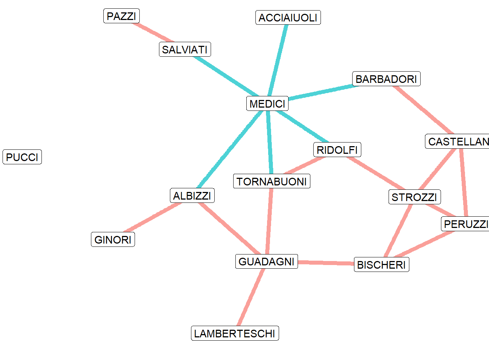
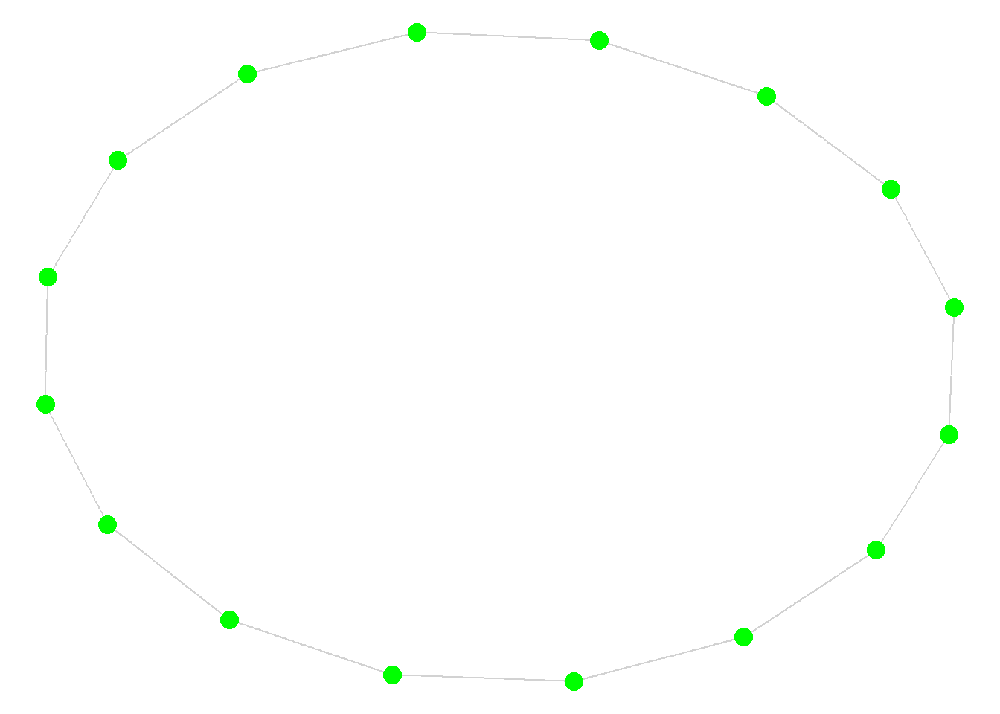
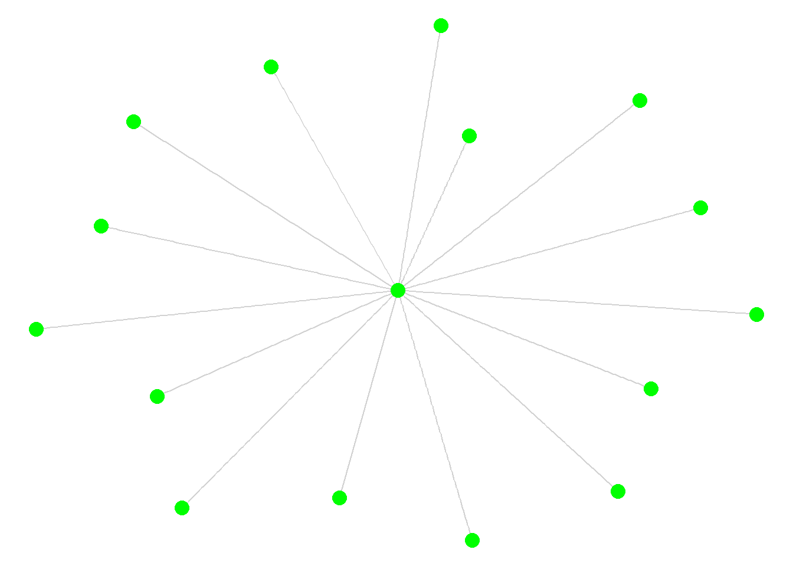
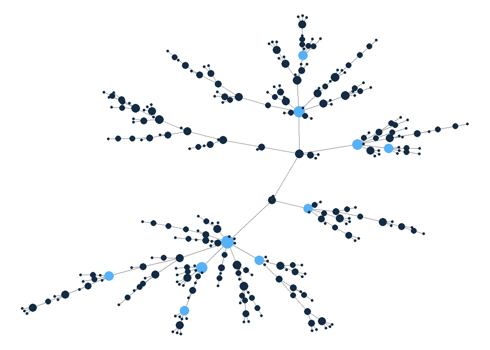
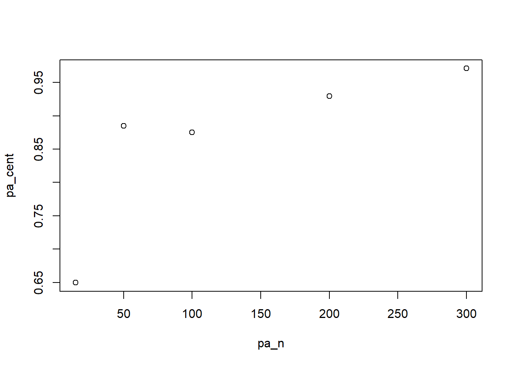

library(intronets)
library(igraph)
library(dplyr)
library(ggraph)5 Central Actors and Centralized Networks
My interest in social networks was sparked by my fascination with peer group dynamics when I was in middle school. Some of my classmates were very popular in that they had lots of friends, whereas others tended to keep to themselves or had only one or two close friendships. While I never quite fit into either extreme, I was, for a time, quite envious of the popular kids in my school. I was fascinated by how those students could draw the attention and admiration of my classmates, as well as influence their opinions.
This is a common fascination about social networks. Some actors play an especially important role in social networks by virtue of their centrality in the network. Being central in a network tends to provide people with prominence (they are easy to identify), prestige (they have higher status), and power (they have the ability to influence others).
Centrality is a node-level attribute. But entire networks can be defined by their level of centralization, which refers to the extent that a network is dominated by a central actor. It is easy to imagine a situation whereby the social relationships for one grade level might be centralized around a singularly popular individual, whereas the relationships in another grade level might be less focused on a single person. Variation in centralization across graphs is likely to have important implications for learning, mental health, and many other outcomes across those different contexts.
This chapter will address different ways of measuring centrality and centralization in social networks. We will examine a historical example of centrality and its consequences for power dynamics among prominent families in Renaissance Florence. We will also consider the general tendencies that often produce highly centralized networks and how those tendencies are reflected in modern and even digital social networks.
First, let’s read in our libraries. We will use intronets to access the data, igraph to manipulate network objects, dplyr for data management, and ggraph to visualize the networks.
5.1 Measuring Centrality
How do we know if one person is more central to a network than another? There are actually several answers to this question and those answers depend on which aspect of centrality is most important. Is a central actor someone who has lots of friends? Someone who is relatively close to all others based on relationship path distances? Or someone who has the ability to control the flow of information that passes through the different relationships?
Let’s examine these ideas by examining a network of inter-marriage relationships between families in 15th Century Florence, Italy. Constructed based on historical marriage records, these families were prominent merchants and financiers during the Renaissance. At this time and place in history, marriage bonds were important because allowed families to ally together to support their business interests and their political aspirations.
The code below loads in the marriage network data and examines its contents.
load_nets("ifm.rda")
ifmIGRAPH abdc5da U--- 16 20 --
+ attr: na (v/l), seats (v/n), ties (v/n), vertex.names (v/c), wealth
| (v/n), na (e/l)
+ edges from abdc5da:
[1] 1-- 9 2-- 6 2-- 7 2-- 9 3-- 5 3-- 9 4-- 7 4--11 4--15 5--11
[11] 5--15 7-- 8 7--16 9--13 9--14 9--16 10--14 11--15 13--15 13--16The igraph object contains 16 families and 20 marriage bonds between them. Information is provided about the number of seats held by family members in the civic council and the family’s net wealth. We will later use these variables to consider how each family’s marriage network centrality is related to their political and economic power.
Let’s visualize the network of relationships.
ggraph(ifm, layout = "fr") +
geom_edge_link(color = "grey", alpha = 0.7) +
geom_node_label(aes(label = vertex.names)) +
theme_void()
5.1.1 Degree centrality
Which of these families is most central? The simplest way to answer this question is to rank the families by the number of ties that they have to other families. This number is their degree, which is why this is referred to as degree centrality. The idea is that a family is central to the network if it maintains many ties.
The following code obtains the degree values for each family and assigns those values to the graph as vertex attributes. Then we can create a separate data frame to compare the degree scores for each family.
V(ifm)$deg <- degree(ifm)
cent <- as.data.frame(cbind(V(ifm)$vertex.names,
V(ifm)$deg))
colnames(cent) <- c("family","degree")
cent$degree <- as.numeric(cent$degree)
cent |>
arrange(desc(degree)) family degree
1 MEDICI 6
2 GUADAGNI 4
3 STROZZI 4
4 ALBIZZI 3
5 BISCHERI 3
6 CASTELLANI 3
7 PERUZZI 3
8 RIDOLFI 3
9 TORNABUONI 3
10 BARBADORI 2
11 SALVIATI 2
12 ACCIAIUOLI 1
13 GINORI 1
14 LAMBERTESCHI 1
15 PAZZI 1
16 PUCCI 0The results show that the family with the highest degree (the most marriage bonds) is the Medici family. You may have heard of this family before. The Medicis were considered to be the most powerful family in Renaissance Florence. The degree centrality measure suggests that the Medicis helped consolidate their power by developing many influential marriage ties.
The raw degree number is fine for estimating centrality among nodes in a single network. But it can be problematic when comparing centrality scores across different networks. For example, 6 is a high degree score in this network, but it might not be a high score for a sample of elite Venetian families. For this we need to standardize the degree count such that it reflects the number of ties to other alters as a proportion of all possible ties. All possible ties to others is equal to the total number of families (n) minus 1. The standardized degree centrality score is estimated below. Note that the maximum value is 0.4, which is the score for Medici. This tells us that Medici is connected to 40% of the other families by marriage (6/15 = 0.4).
n <- gorder(ifm)
deg_cent <- cent$degree/(n - 1)
summary(deg_cent) Min. 1st Qu. Median Mean 3rd Qu. Max.
0.00000 0.06667 0.20000 0.16667 0.20000 0.40000 One final thing to note about degree centrality: this network is undirected because we are treating marriages as mutually agreed upon relationships. In directed networks, one can estimate separate indegree and outdegree centrality scores.
5.1.2 Closeness centrality
Another way to think about centrality is based on the notion of closeness. We can think about distance in a network graph based on the number of paths (along the network edges) it would take to get from one node to the next. For example, Albizzi has to travel a distance of two paths to reach Barbadori (Albizzi – Medici, Medici – Barbadori), compared to a distance of one path for Castellani to reach Barbadori (Castellani – Barbadori). In this way, Castellani is one path length closer to Barbadori than is Albizzi.
To estimate each family’s closeness centrality to the entire network, we would need to calculate the average geodesic (shortest path length) for every combination of families in the graph. The code below generates a distance matrix that displays these values. Here I will show only the distances between the first five families in the matrix. Note that it shows the correct path distances, as described above, between Albizzi and Barbadori (2), as well as Castellani and Barbadori (1).
dist_mat <- distances(ifm)
rownames(dist_mat) <- V(ifm)$vertex.names
colnames(dist_mat) <- V(ifm)$vertex.names
dist_mat[1:5,1:5] ACCIAIUOLI ALBIZZI BARBADORI BISCHERI CASTELLANI
ACCIAIUOLI 0 2 2 4 3
ALBIZZI 2 0 2 2 3
BARBADORI 2 2 0 3 1
BISCHERI 4 2 3 0 2
CASTELLANI 3 3 1 2 0To estimate closeness centrality, one starts by averaging the values from this distance matrix for each family. Then we take the inverse (1 divided by the average distance) to obtain the closeness estimate. The closeness command in igraph does this calculation for us.
close <- closeness(ifm)
cent$close <- close
cent |>
arrange(desc(close)) |>
select(family,close) family close
1 MEDICI 0.04000000
2 RIDOLFI 0.03571429
3 ALBIZZI 0.03448276
4 TORNABUONI 0.03448276
5 GUADAGNI 0.03333333
6 BARBADORI 0.03125000
7 STROZZI 0.03125000
8 BISCHERI 0.02857143
9 CASTELLANI 0.02777778
10 SALVIATI 0.02777778
11 ACCIAIUOLI 0.02631579
12 PERUZZI 0.02631579
13 GINORI 0.02380952
14 LAMBERTESCHI 0.02325581
15 PAZZI 0.02040816
16 PUCCI NaNAgain the Medici family shows up as the most central family in the network, indicating that it has the lowest average path distance to all other families. Note that Pucci does not receive a closeness centrality score. This is because Pucci is an isolate and cannot reach any of the other families.
5.1.3 Betweenness Centrality
One final way to evaluate centrality is to assess the extent to which a node is a central hub in the network, such that knowledge or information might frequently travel through the node. In this way, a central hub is a node that is between other nodes.
Again we can return to the idea of geodesic (shortest path) distances between nodes. To the extent that families are frequently on these geodesic paths, they have high betweenness centrality. Let’s look at an example. The following code obtains the geodesic path from Albizzi (vertex #2) to Pazzi (vertex #10).
geodesic_2to10 <- all_shortest_paths(ifm, from = "2", to = "10")
vec_2to10 <- as.vector(geodesic_2to10$res[[1]])
V(ifm)$vertex.names[vec_2to10][1] "ALBIZZI" "MEDICI" "SALVIATI" "PAZZI" By virtue of being on this geodesic path, Medici and Salviati are in a central location that allows them control the flow of resources between Albizzi and Pazzi or otherwise broker relationships between those two families.
Calculating betweenness centrality therefore involves estimating the number of geodesic paths that each family is part of. By including the normalized option, the betweenness count is divided by the total possible geodesic paths on which a family could possibly be included.
between <- betweenness(ifm, normalized = T)
cent$between <- between
cent |>
arrange(desc(between)) |>
select(family,between) family between
1 MEDICI 0.45238095
2 GUADAGNI 0.22063492
3 ALBIZZI 0.18412698
4 SALVIATI 0.12380952
5 RIDOLFI 0.09841270
6 BISCHERI 0.09047619
7 STROZZI 0.08888889
8 BARBADORI 0.08095238
9 TORNABUONI 0.07936508
10 CASTELLANI 0.04761905
11 PERUZZI 0.01904762
12 ACCIAIUOLI 0.00000000
13 GINORI 0.00000000
14 LAMBERTESCHI 0.00000000
15 PAZZI 0.00000000
16 PUCCI 0.00000000Once again, Medici shows up as the most central family in the network, and by a wide margin. Medici’s betweenness centrality score suggests that it resides on around 45 percent of all geodesic paths in the network. Further inspection of the graph reveals why. Below we highlight all of the direct paths to Medici.
medici_id <- as.numeric(which(V(ifm)$vertex.names == "MEDICI"))
E(ifm)$medici_edge <- E(ifm) %in% incident(ifm, medici_id, mode = "all")
ggraph(ifm, layout = "fr") +
geom_edge_link(aes(color = medici_edge), width = 2,
alpha = 0.7, show.legend = F) +
geom_node_label(aes(label = vertex.names)) +
theme_void()
Medici is on nearly all of the geodesic paths that involve Acciaiuoli, Salviati, and Pazzi (the only exception is for the geodesic between Salviati and Pazzi). That puts Medici in a strong position to broker deals between those families and all others in the network.
5.1.4 Centrality Extensions
Researchers and statisticians have developed many other ways to measure centrality in networks. The reference section includes further citations to explore. But I wanted to mention one commonly used measure: eigenvector centrality. This is an attempt to improve on closeness centrality by weighting a node’s closeness to other nodes based on how central those target nodes are.
For example, the closeness centrality score treats the distance between a family and Ginori as being as important as the distance to Medici. The eigenvector centrality score gives greater weight to path distances that target Medici because Medici is the most central family. In this way, eigenvector centrality measures the extent to which families are close to families that are highly central.
eigen <- eigen_centrality(ifm)
cent$eigen <- round(eigen$vector, 4)
cent |>
arrange(desc(eigen)) |>
select(family,eigen) family eigen
1 MEDICI 1.0000
2 STROZZI 0.8273
3 RIDOLFI 0.7937
4 TORNABUONI 0.7572
5 GUADAGNI 0.6719
6 BISCHERI 0.6572
7 PERUZZI 0.6408
8 CASTELLANI 0.6020
9 ALBIZZI 0.5669
10 BARBADORI 0.4920
11 SALVIATI 0.3391
12 ACCIAIUOLI 0.3071
13 LAMBERTESCHI 0.2063
14 GINORI 0.1741
15 PAZZI 0.1041
16 PUCCI 0.0000Medici is again the most central family using this metric. Note that this procedure estimates a value of zero for Pucci, the isolate, instead of a missing value.
5.2 The Benefits of Centrality
How might centrality in the marriage ties network benefit these Florentine families? To address this question, let’s attach the political and economic vertex attributes to our centrality dataset. Then we can correlate the two sets of scores. Before running the correlation, I have to remove the column for the names of the families because it is not numeric. I also remove the closeness variable, which returns no correlation results due to the missing score for the isolate, Pucci. (This is okay because the eigenvector score provides a similar estimate.)
cent$seats <- V(ifm)$seats
cent$wealth <- V(ifm)$wealth
cent |>
select(-family, -close) |>
cor(method = c("pearson")) degree between eigen seats wealth
degree 1.0000000 0.8333763 0.9404711 0.5480948 0.5589956
between 0.8333763 1.0000000 0.6737085 0.4313423 0.3511716
eigen 0.9404711 0.6737085 1.0000000 0.5366747 0.5365981
seats 0.5480948 0.4313423 0.5366747 1.0000000 0.4216972
wealth 0.5589956 0.3511716 0.5365981 0.4216972 1.0000000Correlation coefficients range from -1 to 1, with positive values indicating a positive relationship, the opposite for negative values, and zeros reflecting null relationships. The diagonal values are all ones because they reflect the perfect correspondence between a single variable and itself. The first thing to note is that all of our centrality scores are strongly and positively related to one another, with all values above 0.6. This implies that the number of connections (degree), the closeness (eigenvector), and the brokerage (betweenness) aspects of centrality are highly related.
Looking at the bottom two rows, we can see that the measures of political power (seats) and economic power (wealth) are also strongly and positively associated with the centrality scores, with all correlation coefficients above 0.35. More detailed analysis would be needed to make causal claims about these relationships, but the results are certainly suggestive that marriage network centrality and political/economic power go hand in hand.
5.3 Centralization
While centrality is a node-level feature, centralization is a graph-level feature. Centralization refers to the extent that a graph is dominated by a single focal actor, providing a sense of how hierarchically organized the network is. It is measured by the sum of the differences between the most central actor’s centrality score and the centrality scores of all other actors, divided by the maximum possible difference. Values range from 0 (even centrality scores among actors) to 1 (highly unequal centrality scores). Because the metric is based on centrality scores, one can estimate separate centralization values for degree, closeness, betweenness, eigenvector, or any other form of centrality.
Let’s examine eigenvector centralization for the Florentine marriage network.
centr_eigen(ifm, directed = F)$centralization[1] 0.5614437Is this a high, low, or moderate level of centralization? Let’s compare this network to a series of simulated networks. Below we create two unique types of networks: ring and star.
ring <- make_ring(16, directed = F, mutual = F, circular = T)
star <- make_star(16)
ggraph(ring, layout = "fr") +
geom_edge_link(color = "grey", alpha = 0.7) +
geom_node_point(color = "green", size = 4) +
theme_void()
ggraph(star, layout = "fr") +
geom_edge_link(color = "grey", alpha = 0.7) +
geom_node_point(color = "green", size = 4) +
theme_void()
round(centr_eigen(ring, directed = F)$centralization, 3)[1] 0round(centr_eigen(star, directed = F)$centralization, 3)[1] 0.795These simulated networks represent centralization extremes. Every node in the ring network has the exact same eigenvector centrality score, which results in a centralization score of zero. By contrast, the edges in star network is focused on a single focal actor, with no ties among the other actors, which results in a very high centralization score. In fact, this is the highest score possible for a connected network of the same size (N = 16) as the Florentine marriage network. The centralization score for the Florentine network falls within these extremes, but is closer to the higher end of the values.
5.4 Preferential Attachment
It is not surprising that the Florentine network leans toward the higher end of the centralization spectrum. Human networks are frequently marked by higher levels of centralization than random networks. Researchers have linked this pattern to a general tendency toward connecting with people who are popular.
This tendency is referred to as preferential attachment. Instead of thinking about a social network as an already existing set of people in a bounded unit (like students assigned to a class), the preferential attachment model theorizes networks as scale-free in that they involve a constant influx of new people into the network. These new people make choices about whom they want to form ties with. And those choices are influenced by popularity.
Consider the Florentine network. Let’s say you are the head of one of the families and you want to form a marriage bond. If you could choose between Medici and Pucci, who would you choose? Forming a tie with Medici (the most central and popular family) is a far better choice if you want to enhance your status, wealth, and power in the city.
We can simulate a series of preferential attachment networks to see how the centralization of the network changes as the size of the network grows. Here we create 5 networks in which we vary the size from 15 nodes to 300 nodes. We set the tendency to connect to high degree alters (power) to .5, which is the midpoint between no preferential attachment (0) to maximum preferential attachment (1). Then we can visualize the largest of these networks.
pa15 <- sample_pa(15, power = .5, directed = F)
pa50 <- sample_pa(50, power = .5, directed = F)
pa100 <- sample_pa(100, power = .5, directed = F)
pa200 <- sample_pa(200, power = .5, directed = F)
pa300 <- sample_pa(300, power = .5, directed = F)
V(pa300)$deg <- degree(pa300)
V(pa300)$deg_cat <- ifelse(V(pa300)$deg > 5, 2, 1)
ggraph(pa300, layout = "fr") +
geom_edge_link(color = "darkgrey") +
geom_node_point(aes(color = deg_cat, size = deg), show.legend = F) +
theme_void() 
The graph sizes the nodes by degree and highlights the high degree nodes (degree > 5). The visualization reveals numerous hubs that are popular targets for connection. What we end up with is a hierarchically structured network focused on these central nodes.
What does this mean for centralization? Let’s observe the changes in the centralization scores as the size of the network increases. The code below calculates eigenvector centralization scores and plots them.
cent15 <- centr_eigen(pa15, directed = F)$centralization
cent50 <- centr_eigen(pa50, directed = F)$centralization
cent100 <- centr_eigen(pa100, directed = F)$centralization
cent200 <- centr_eigen(pa200, directed = F)$centralization
cent300 <- centr_eigen(pa300, directed = F)$centralization
pa_n <- c(15, 50, 100, 200, 300)
pa_cent <- c(cent15, cent50, cent100, cent200, cent300)
plot(pa_n, pa_cent)
The graph reveals an exponential increase in graph centralization as more and more actors enter the network, quickly becoming maximally centralized. Now imagine networks based on social media connections and it is easy to see how content on those platforms can become dominated by a small number of highly central superstar connectors!
Centrality and centralization are crucial aspects of social networks, whether historical family relations or modern social media relations. Centrality helps us to understand who the most prominent and powerful actors are in the network and to explain how those individuals shape the flow and distribution of valuable resources in those contexts. The different centrality measures allow us to assess distinct mechanisms by which central actors affect the network. Centralization captures the extent of hierarchy in networks, telling us how dominant central actors are within and across different social contexts.
5.5 References
More reading on the Florentine families data…
Kent D. 1978. The rise of the Medici: Faction in Florence, 1426-1434. Oxford: Oxford University Press.
Breiger R. and Pattison P. 1986. Cumulated social roles: The duality of persons and their algebras. Social Networks, 8, 215-256.
Padgett, John F., and Christopher K. Ansell. 1993. “Robust Action and the Rise of the Medici, 1400-1434.” American Journal of Sociology 98(6):1259–1319.
More reading on centrality and centralization
Barabási, Albert-László, and Réka Albert. 1999. “Emergence of Scaling in Random Networks.” Science 286(5439):509–12.
Burt, Ronald S. 1992. Structural Holes: The Social Structure of Competition. Cambridge, MA: Harvard University Press.
Bonacich, Phillip. 2007. “Some Unique Properties of Eigenvector Centrality.” Social Networks 29(4):555–64.
Borgatti, Stephen P., and Martin G. Everett. 2006. “A Graph-Theoretic Perspective on Centrality.” Social Networks 28(4):466–84.
Everett, M. G., and S. P. Borgatti. 1999. “The Centrality of Groups and Classes.” The Journal of Mathematical Sociology 23(3):181–201.